# install.packages("quarto")Project Management and Reproducibility in RStudio: Part 2
Configuration
Packages
This class features exercises that will help you learn by doing. To prepare, please install the following on your machine:
If you haven’t already, please sign-up for a free GitHub account.
Install latest version of RStudio, v2022.07.0-548 or later
Install latest version of Quarto (v1.0.36 or greater)
Quarto is also available as a package. The quarto package provides an R interface to frequently used operations in the Quarto Command Line Interface (CLI). The package is not a requirement for using Quarto with R. Rather, it provides an R interface to common Quarto operations for users who prefer to work in the R console rather than a terminal, and for package authors that want to programatically interface with Quarto.
You will also need to install the knitr package. Knitr is a general-purpose tool for dynamic report generation in R using Literate Programming techniques.
# install.packages("knitr")Other useful packages to install include the tidyverse and rmarkdown packages.
rmarkdown, The rmarkdown package helps you create dynamic analysis documents that combine code, rendered output (such as figures).
tidyverse, includes the packages that you’re likely to use in everyday data analyses.
Resources
R Project Management URLs
Introduction to Reproducible Publications with RStudio: https://carpentries-incubator.github.io/Reproducible-Publications-with-RStudio/
R for Reproducible Scientific Analysis: https://swcarpentry.github.io/r-novice-gapminder/
Reproducible Research Data and Project Management in R: https://annakrystalli.me/rrresearchACCE20/
Using Projects: https://support.rstudio.com/hc/en-us/articles/200526207-Using-RStudio-Projects
Quarto URLS
Official Documentation & Quickstarts
Documentation: Quarto documentation - Official Quarto Documentation.
GitHub: Quarto GitHub repository - Official Quarto GitHub repository.
Tutorial: Hello, Quarto - Official “Hello, Quarto” tutorial.
Tutorial: Computations - Official “Computations” tutorial.
Tutorial: Authoring - Official “Authoring” tutorial.
Tutorials and Workshops
- Reproducible authoring with Quarto - 2022 Toronto Workshop on Reproducibility with Mine Çetinkaya-Rundel (slides: https://mine-cetinkaya-rundel.github.io/2022-repro-toronto/).
- Tutorial: Making shareable docs with Quarto - A tutorial to make website with Quarto.
- Workshop: From R Markdown to Quarto - A workshop for those who want to take their R Markdown skills and expertise and apply them in Quarto, the next generation of R Markdown.
- Workshop: Getting started with Quarto - “Get started with Quarto” workshop materials for rstudio::conf(2022).
Note: Mickaël Canouil maintains a page of Quarto resources
Introduction
This one-hour class focuses on data and project management using R and RStudio. RStudio makes it possible to work on a complete research project in a more efficient, integrated, and organized manner. Participants will learn how to create reproducible documents that combine code, analysis, and narrative. This intermediate-level course is designed to be relevant to students from different disciplines. Some familiarity or experience in R and RStudio is recommended but not required. Students are encouraged to install R and RStudio before the webinar so that they can follow along with the instructor.
Upon completion of this class students should be able to:
- Create an R-markdown document using Quarto
- Distinguish between the source and the visual editor
- Add code chunks to R-markdown documents
- Understand how to use reproducible code chunks [maybe for advanced class]
- Create a bibliography and link it to a R-markdown document
Literate Programming and Markdown
Researchers and analysts tend to write a lot of reports, describing their analyses and results, for their collaborators or to document their work for future reference.
Ideally, you want your reports to be reproducible documents. For example, if an error is discovered, or if some additional subjects are added to the data, you can just re-compile the report and get the new or corrected results rather than having to reconstruct figures, paste them into a Word document, and hand-edit various detailed results.
Many new users begin by first writing a single R script containing all of their work, and then share the analysis by emailing the script and various graphs as attachments. But this can be cumbersome, requiring a lengthy discussion to explain which attachment was which result.
One option is using R Markdown, a light-weight markup language for creating documents in multiple formats. When the document is processed by knitr, chunks of code will be executed, and graphs or other results will be inserted into the final document. This sort of idea has been called “literate programming”.
Additionally, the formatting of and R Markdown document is simple and easy to modify, allowing you to spend more time on your analyses instead of writing reports. You can use a single R Markdown file to both
Save and execute code
Generate high quality reports that can be shared with an audience
This page provides a nice overview of R markdown the top provide examples of R Markdown documents, as well as an in depth discussion of various R Markdown topics.
You may also find the following resources helpful:
A History of Markdown
History adapted from (Bray et al., n.d.)
1984 Literate Programming proposed to combine text with code
2002
Sweaveweaves together S/R and TEXTEX2006
pandocconverts between different document formats2012
knitra next gen Sweave for R and Markdown2014
knitr::pandocadded to leveragepandocflexible outputs2015
pandocfunctionality moved into newrmarkdown2018 R Markdown: A definite guide
2020 R Markdown Cookbook
2022 Quarto
Figure 1 is displaying the workflow for RMD.
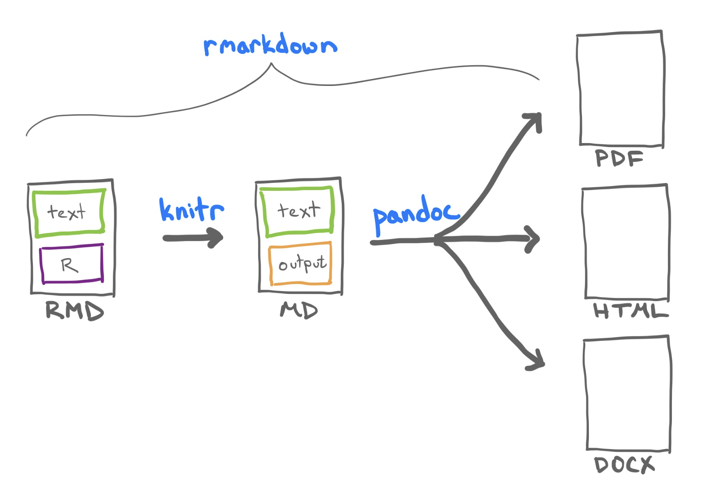
Figure 1: RMD transformation workflow.
Quarto
In August 2022, RStudio adopted Quarto as its supporting publishing platform. Quarto is an open-source scientific and technical publishing system built on Pandoc. Quarto allows you to create dynamic content with Python, R, Julia, and Observable.
Author documents as plain text markdown or Jupyter notebooks.
Publish high-quality articles, reports, presentations, websites, blogs, and books in multiple formats.
Author with scientific markdown, including equations, citations, crossrefs, and figure panels.
Figure 2 is displaying the workflow for Quarto.
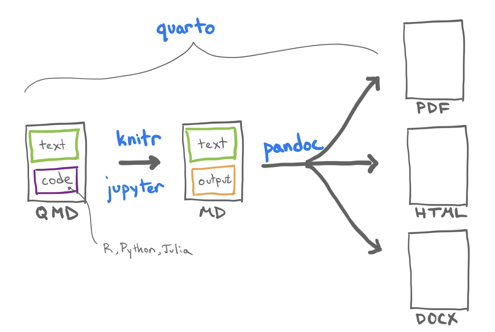
Figure 2: Quarto transformation workflow.
How Quarto is Different From R Markdown
Quarto is compute-agnostic. R Markdown requires R.
The ecosystem of R packages is replaced by a single framework.
R Markdown Only Options
Access tools built around R Markdown (e.g.
blogdown) that haven’t yet been implemented in QuartoHeavy users of such tools may want to stick with R Markdown
Quarto Only Options
Easier to organize appearance across documents
Features (e.g. figures, tables) have better cross-format support
Better cross referencing
Up-to-date revealjs slides. reveal.js is an open source HTML presentation framework. It’s a tool that enables anyone with a web browser to create fully-featured and beautiful presentations for free.
Easier to customize websites and books with projects
Creating and Styling Quarto Documents
https://rstudio-conf-2022.github.io/rmd-to-quarto/materials/2-polishing-documents/
Quarto is a multi-language, next generation version of R Markdown from RStudio, with many new new features and capabilities. Like R Markdown, Quarto uses Knitr to execute R code, and is therefore able to render most existing Rmd files without modification.
In this section we are going to learn how to create generic block and inline elements, set classes and attributes, and practice using Quarto-specific elements in RStudio’s visual editor. Although we do not cover this topic in this class, I have include some resources on how to customize the appearance of your documents with elementary CSS.
https://quarto.org/docs/computations/r.html
Let us create a new document by navigating to File > New File > Quarto Document [Figure 3].
Add the title Proj-Mgmt-02.
Add your name as author
Leave Knitr as the render engine
Enable the Visual Markdown Editor (more about this feature below)
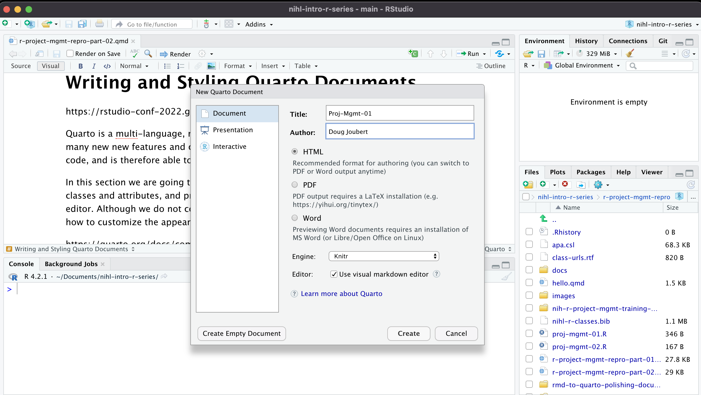
Figure 3: Creating a new Quarto document.
If you scroll down the doc that you just created you can see that the Quarto file is already populated with text and code [Figure 4].
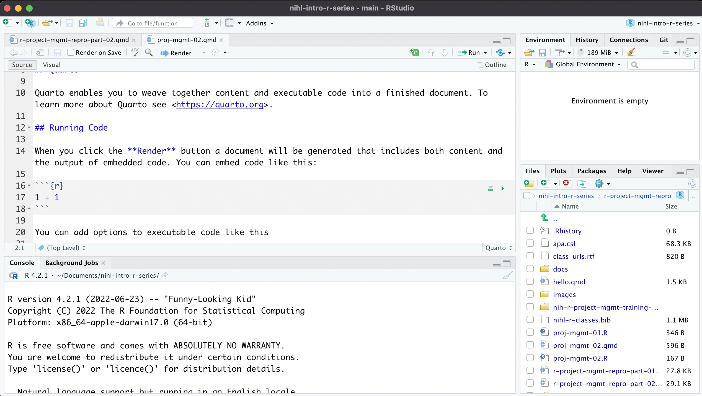
Figure 4: Default RMD document.
Let’s first delete the generic text because we don’t need it at this point. The only thing we need to keep is the Header:
---
title: "Proj-Mgmt-01"
author: "Doug Joubert"
format: html
editor: visual
---
Quarto Content Structure
A Quarto document consists of content, structure, appearance, format.
| 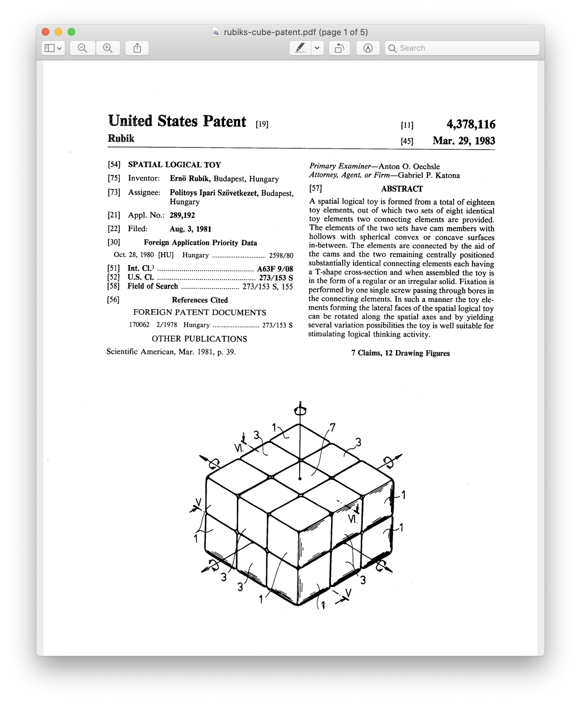 |
|
Figure 5: Sample quarto document.
What Define the Structure of a Document
A document is a list of block elements that contain inline elements or other blocks, along with associated metadata.
Block Element
A Block Element starts on a new line and followed by an empty line. An example of block elements is included in Figure 6.
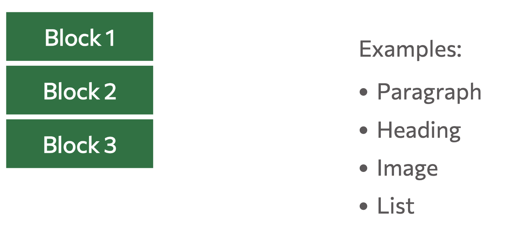
Figure 6: Example of Quarto block elements.
Inline Element
Inline elements modify content inline and are not followed by a new line. An example of inline elements are included in Figure 7.
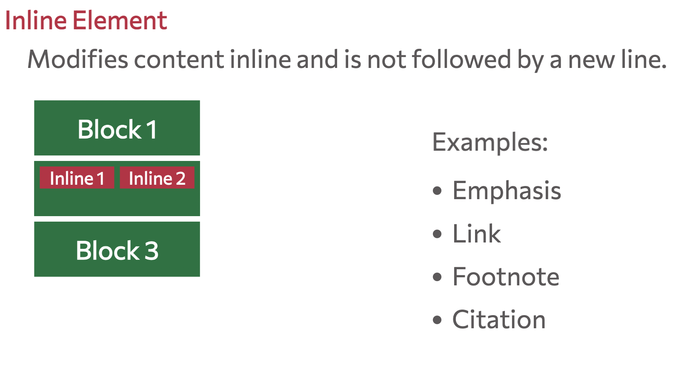
Metadata Element
Metadata elements contain ancillary info about the document’s origin, format, look, etc. An example of a metadata elements are included in Figure 8.
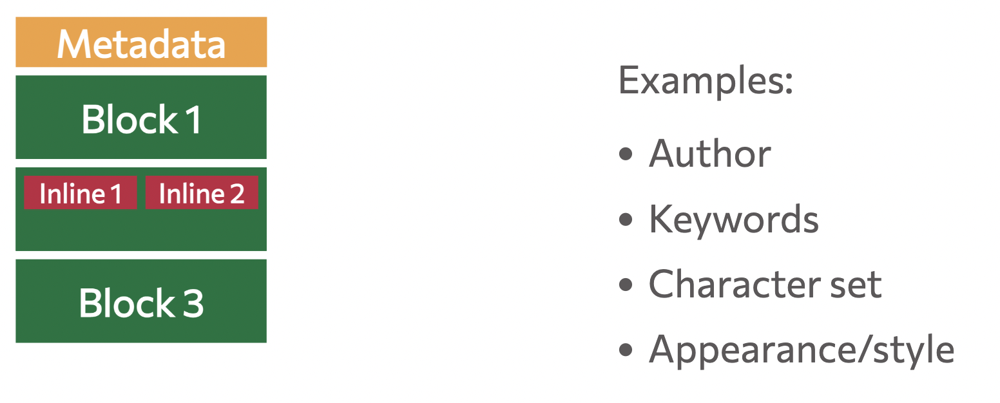
Figure 8: Example of Quarto metadata elements.
Figure 9 is displaying both the Quarto code (left) and the rendered Quarto code (right).
| Quarto Code | Output on Render |
|---|---|
| 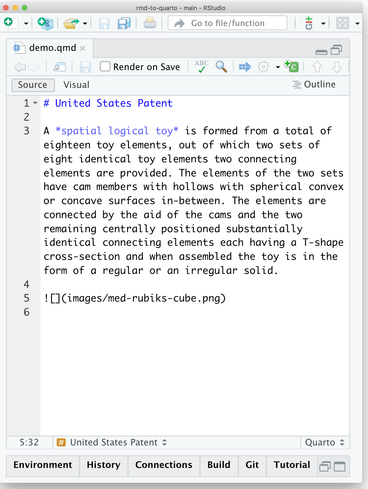 | 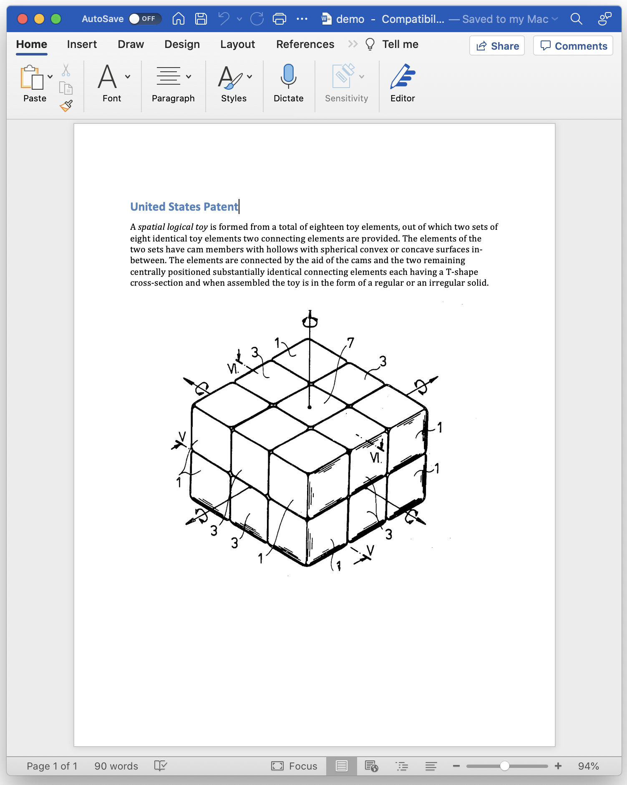 |
Figure 9: Example of a rendered Quarto document.
Editor Options
Visual Editor
The Quarto visual editor provides a WYSIWYM editing interface for all of Pandoc markdown, including tables, citations, cross-references, footnotes, divs/spans, definition lists, attributes, raw HTML/TeX, and more. The visual editor also includes support for executing code cells and viewing their output inline.
Current version of RStudio has the Source/Visual tabs on the Menu panel. If you are using an older version of RStudio, the visual editor is accessible through a small button on the far right side of the script/document pane in RStudio. The icon is a protractor, but from further away it just looks like a squiggly “A”. Figure 10 is displaying the Quarto document for this class, in visual mode.
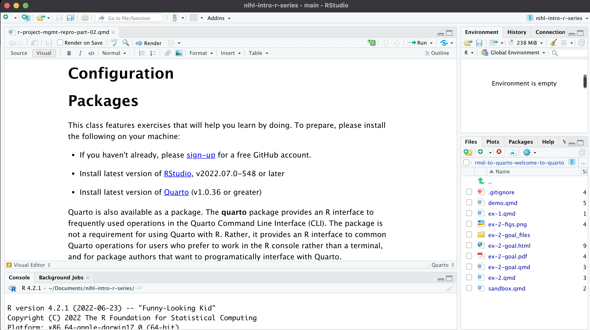
Figure 10: Markdown using the visual editor.
Source Editor
Figure 11 showng the same document using the “source editor” mode. Notice the symbols scattered throughout the text (#, *, <>). Those are examples of R Markdown syntax, which is a flavor of Markdown syntax, an easy and quick, human-readable markup language for document styling.
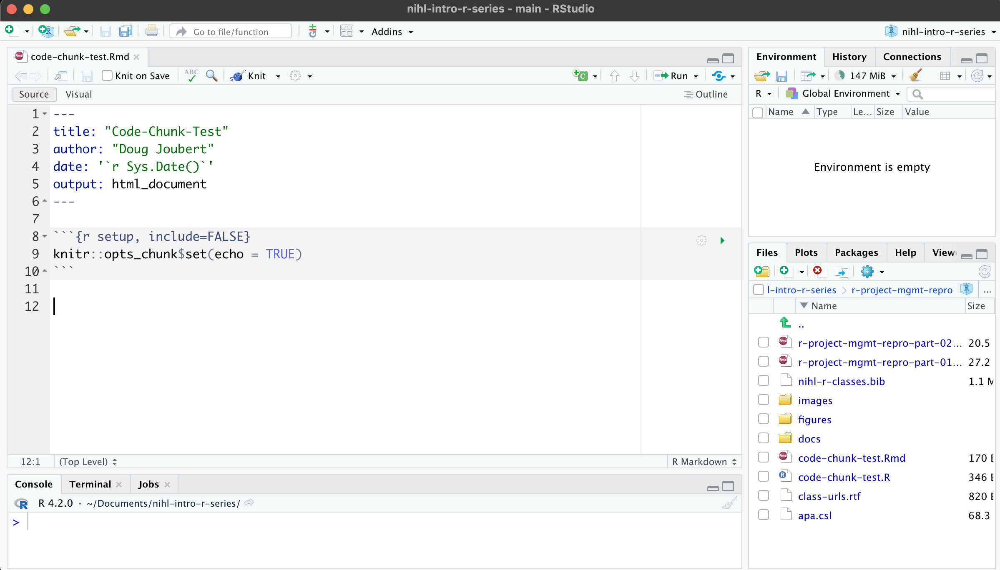
Figure 11: RMD file using Source Editor.
Basic R-Markdown
You make things bold using two asterisks, like this: **bold**, and you make things italics by using underscores, like this: _italics_.
You can make a bullet list by writing a list with hyphens or asterisks, like this:
* bold with double-asterisks
* italics with underscores
* code-type font with backticksor like this:
- bold with double-asterisks
- italics with underscores
- code-type font with backticksEach will appear as:
bold with double-asterisks
italics with underscores
code-type font with backticks
You can use whatever method you prefer, but be consistent. This maintains the readability of your code.
You can make a numbered list by just using numbers.
1. bold with double-asterisks
2. italics with underscores
3. code-type font with backticksThis will appear as:
bold with double-asterisks
italics with underscores
code-type font with backticks
You can make section headers of different sizes by initiating a line with some number of # symbols:
# Title
## Main section
### Sub-section
#### Sub-sub sectionIt is good to be aware of how to use the source editor, since you might have to fix a piece of broken RMD created using the Visual Editor. However, all of the formatting options are available via the Formatting Menu Bar [6].
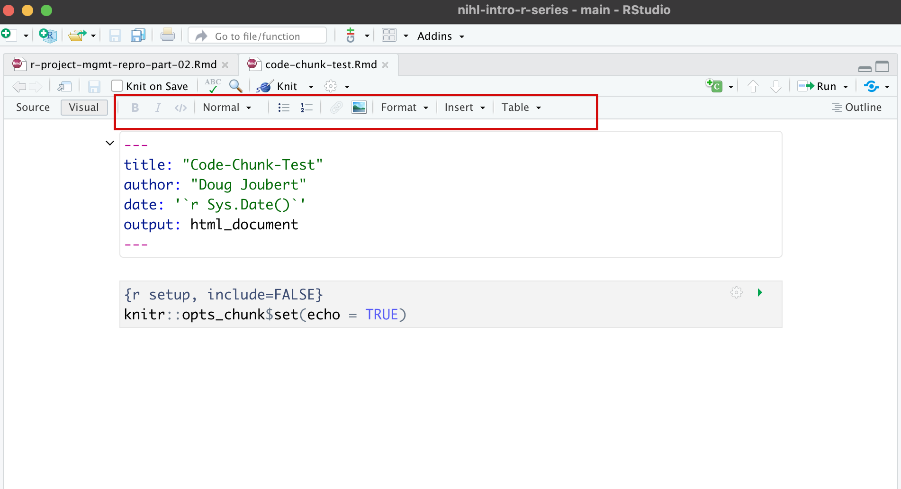
Figure 6: Formatting Menu Bar.
Adding Code-Generated Plots and Figures
https://rstudio-conf-2022.github.io/rmd-to-quarto/materials/3-computation/
There are two main ways to process code with Knitr in R Markdown documents:
Code Chunks
Inline Code
Inserting Code Chunks
Code chunks are better when you need to do something more sophisticated with your code, such as building plots or tables. They also incorporate syntax which allows modifications to how that code is rendered and styled in your final output. We’ll learn more about that as we walk through the “anatomy” of a code chunk.
Basic Anatomy of the Code Chunk
You can quickly insert chunks like these into your file with:
the keyboard shortcut Ctrl + Alt + I (OS X: Cmd + Option + I)
the Add Chunk command in the editor toolbar
or by typing the chunk delimiters {r} and ```.
The most basic (and empty) code chunk looks like this:

Although I am demostrating using R in this workshop, it’s possible to use other programming or markup languages. For example, we have seen that we can use LaTeX code for equations. You can also use python and a handful of other languages.

Figure 11: Code options available in R-markdown.
There’s a button you can use in the RStudio menu to generate the code chunks automatically. Automatic code chunk generation is available for several other languages as well. Also, you can use the keyboard shortcut ctrl+alt+i for Windows and command+option+i for Mac. As you can see in Figure 12, the console is blank because we have not executed/run the code chunk. Let us enter the following read statement into our first code chunk:
# This is a example of a code chunk to read in some data
library(tidyverse)
read_data <- "../raw-data/combined.csv"

Figure 12: Code chunk in R-markdown.
Run the code in a code chunk
There are 3 main options for running and debugging code that don’t require us to wait for the file to render.
- Run from code chunk (green play button on the right top corner). This allows us to run one specific code chunk [Figure13].

Figure 13: Running a code chunk from the code-box.
- Run menu, which gives more options for running code chunks including the current one, the next one, all chunks, etc [Figure 14].

Figure 14: Running a code chunk from the Code-Chunk menu.
- Using keyboard shortcuts
| Task | Windows & Linux | macOS |
|---|---|---|
| Create a code chunk | Ctrl + Alt + I | Cmd + Option + I |
| Run all chunks above | Ctrl+Alt+P | Command+Option+P |
| Run current chunk | Ctrl+Alt+C | Command+Option+C |
| Run current chunk | Ctrl+Shift+Enter | Command+Shift+Enter |
| Run next chunk | Ctrl+Alt+N | Command+Option+N |
| Run all chunks | Ctrl+Alt+R | Command+Option+R |
| Go to next chunk/title | Ctrl+PgDown | Command+PgDown |
| Go to previous chunk/title | Ctrl+PgUp | Command+PgUp |
Labeling Code Chunk
While not necessary for running your code, it is good practice is to give a name to each code chunk because it gives the chunk a unique identifier which allows for more advanced options (such as cross-referencing) to work with your rmd files later on:
{r chunk-name}
Some things to keep in mind
The chunk name is the only value other than r in the code chunk options that doesn’t require a tag (i.e.
echo =)The chunk label has to be unique (i.e.you can’t use the the same name for multiple chunks)
We’ll see in a bit where this code chunk label comes in handy. But, for now let’s go back and give our first code chunk a name:
{r Importing our Data}Then, run the code-chunk
Figure 15 is displaying the output of the code-chunk. Can you explain what is happening in the console?

Figure 15: Output from our first code chunk.
Code Chunk Options
There are over 50 different code chunk options. Wow, that is a lot. Obviously we will not go over all of them, but they fall into several larger categories including: code evaluation, text output, code style, cache options, plot output and animation.
You can find a complete list of code chunk options on Knitr developer, Yihui Xie’s, online guide to knitr. Or, you can find a brief list of all options on the R Markdown Reference guide on page 3 accesible through the RStudio Interface by navigating to the main menu bar Help > Cheat Sheets > R Markdown Reference Guide.
The chunk name is the only value other than r in the code chunk options that doesn’t require a tag (i.e. the “= VALUE” part of option = VALUE). So chunk options will always require a tag, and the syntax will be in the form:
{r chunk-label, option = VALUE}
The option always follows the code chunk label (don’t forget to add a , after the label either).
Code Evaluation Option
- include = (logical) whether to include the chunk output in the output document (defaults to TRUE).
Text Output Options
eval = (logical or numeric) TRUE/FALSE to evaluate (or not) or a numeric value like c(1,3) (only evaluate expressions 1 and 3)
echo = (logical or numeric - following the same rules as above) whether to display source code or not.
results = (logical or character) text output of the code can be hidden (hide or FALSE), or delineated in a certain way (default ‘markup’).
warning = (logical) whether to display the warnings in the output (default TRUE). FALSE will output warnings to the console only.
message = (logical) whether or not to display messages that appear when running the code (default TRUE).
Producing Your Document
Knitr
Knitr is the engine in RStudio which creates the “dynamic” part of R Markdown reports. It’s specifically a package that allows the integration of R code into the html, word, pdf, or LaTex document you have specified as your output for R Markdown.
We just saw how to run our code in our code chunks to see a preview of the code output. However, if we want to produce a final report with code, we need to use the Knit button. Using the knit button with code chunks is a two step process:
- The code is run (all code chunks will run automatically).
- Second, (if there are no code errors) the document of choice will render for our whole R Markdown document.
- Figure 15 is showing the Knitr options available

Figure 15: Knitr options in R-markdown.
Global Code Chunk Options
Let’s direct our attention back to the first code chunk in this document that I asked you not to delete.
The code looks like:

Figure 16: Example of a global code chunk.
This is an option to globally set options for the entire R Markdown document. Can you imagine how much work it would be to add the chunk options each time? Also, what if we need different options for different figures. We can automate setting options by adding this special code chunk at the beginning of the document. Then, each code chunk we add will refer to those “global” options when it runs.
Reproducible & Efficient Methods of Using Code Chunks
I think this should be an advanced class. I will need to identify “breakpoints” after I do the dry run and teach the class for the first time.
Bibliography, Citations & Cross-Referencing
Older versions of RStudio require Pandoc’s citation syntax to render bibliographies correctly. We won’t be covering this approach extensively in this workshop, since the new visual editor has made this process much more simple. You can refer to our previous workshop on R Markdown pre-visual editor for more information.
The new visual editor in RStudio 1.4 has made citations and cross-referencing much easier, by offering different options for referencing various types of sources. Before getting into these different features, let’s first learn how you can call the citation window dialog on Rstudio and how to navigate these different options.
Creating Your Reference List
You need to have a list of references saved to a bib file before you can insert citations into your R-markdown document. A file with the BIB file extension is a BibTeX Bibliographical Database file. It’s a specially formatted text file that lists references pertaining to a particular source of information. Each item can be edited, in case there is any metadata incorrect or missing.
There are a number of ways to create your bib file.
- Manually
- Use a citation tool like Endnote or Zotero
- Use the lookup feature to search for publications by DOI (Digital Object Identifier), Crossref, DataCite, or PubMed ID
Most citation and reference management tools such as Refworks, Endnote, Mendeley and Zotero, as well as some most scientific databases allow you to export citations as .bib BibteX files.. I am going to show you how to export references from Endnote to your bib file. Figure 17 is displaying all of the references in my Endnote Library. I have highlighted the Bioinformatics folder since I only want to explore these records.

Figure 17: Example of an Endnote Library.
The first thing I need to do is to get the records in the correct format (bibtex). The Output Style Manager is locating under the Tools Menu (I am on Mac OS) [Figure 18].

Figure 18: Selecting the bibtext output format in Endnote.
If bibtext format is not in the list of styles, you can use Open Style Manager to search for the bibtex format.
The next step is to select all of the references that you want in your bib file and choose the Copy Formatted Reference option [Figure 19]. Please note that using Copy will not work.

Figure 19: Copying references from an Endnote Library in bibtext format.
Figure 20 i showing single reference that I pasted into a text editor. As you can see in Figure 20, the bibtext format is a tagged format that starts with an article tag.

Figure 20: Example of a record in bibtext format.
The BibTeX website is a great resources for learning more about formatting options. Overleaf is another great resource with a focus on bibliographic management.
Saving Your Reference List
There are two ways to export the selected references from Endnote:
- Copy and past into a text document
- Using the Export feature in Endnote
I will cover using the Export feature from Endnote. These steps are very similar in Zotero, Refworks or Mendeley [Figure 21]:
- Make sure you have selected your records
- Choose File->Export in Endnote
- Make sure the Output Style says BibTeX
- Make sure the file extension is bib
- Make sure you are saving the file in the same folder as your RMD file.
- Click Save
- Make sure the file was saved to the correct directory. Note, that you might have to manually check the file extensions after you export it.

Figure 21: Using the Export feature in Endnote.
Linking the Bib File to Your RMD file
You must link the bib file and any associated output styles in the Header of your RMD file. You need to add the following lines of code in the Header [Figure 22].
bibliography: nihl-r-classes.bib

Figure 22: Modifying the RMD header.
Choose Insert>Citation within RStudio. When you do this, you should see the records in the linked bib file [Figure 23].

Figure 23: Inserting a citation in RStudio in Visual Mode.
The search box in Figure 23 is a free text search. This means that it will search on the Author names and the title. Thus, if I search for the name Cimino, the reference list will filter to contain records that match my search string [Figure 24.

Figure 24: Searching for a record in your bib file.
The record number should appear at the insertion point in your RMD file [Figure 25].

Figure 25: Reference inserted into a RMD document.
Changing Citation Styles
By default, RStudio via Pandoc will use a Chicago author-date format for citations and references. To use another style, you will need to specify a CSL (Citation Style Language) file in the csl metadata field in the YAML.
You can find CSL formats on the Zotero Style Repository, which makes it easy to search for and download your desired style.
Download the format you wish to use and call it out in the YAML. I have already saved the APA CSL file in the project folder. But if you would like to follow the process or try another style, go to the Zotero Style repo and select American Psychological Association 7th edition or any other style of your choice. You will notice that it will automatically download the file (e.g. apa.csl). Make sure to save it to your project directory in report/source folder. In the YAML we have to call the exact name of the file preceded by “csl:” The Header of your RMD file should now look like this [Figure 26]:
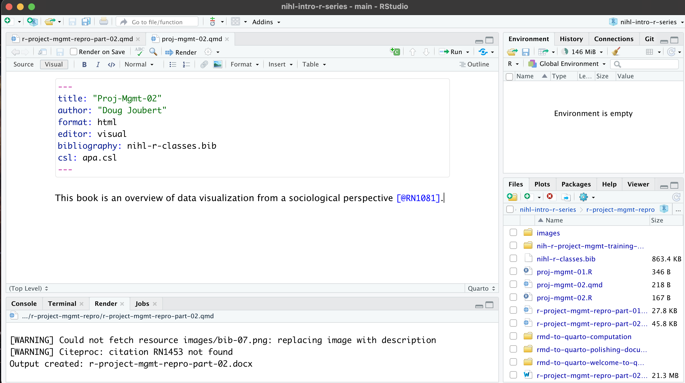
Figure 26: RMD Header with a linked bib file and output style.
The bibliography will be formatted when you Knit your RMD file [Figure 27]. In Figure 27 I have knitted the RMD document in html format.
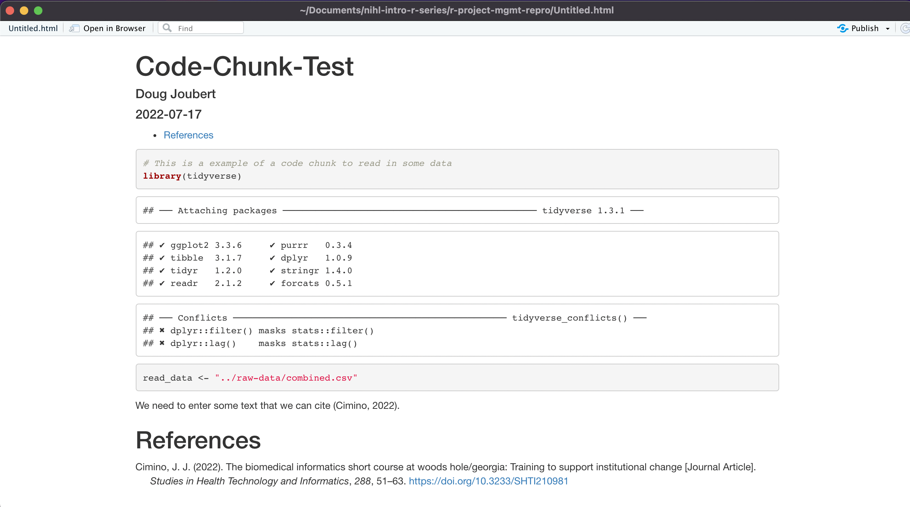
Figure 27: Knitted document with formatted bibliography.
Publishing your project
Licenses
Licensed under CC-BY 4.0 2022 by the authors.
References
Bray, A., Barter, R., Canelón, S., Dervieux, C., & Shigeta, T. (n.d.). From r markdown to quarto. Rstudio::conf 2022. https://rstudio-conf-2022.github.io/rmd-to-quarto/